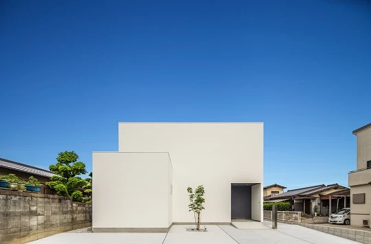
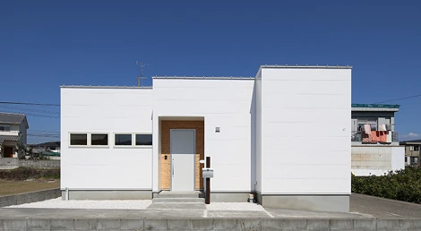
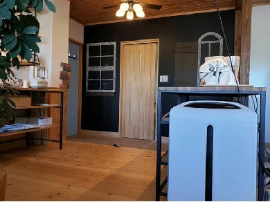
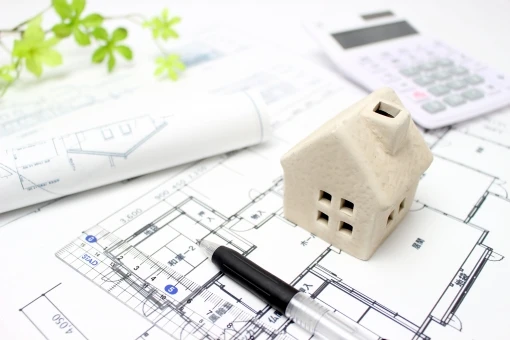
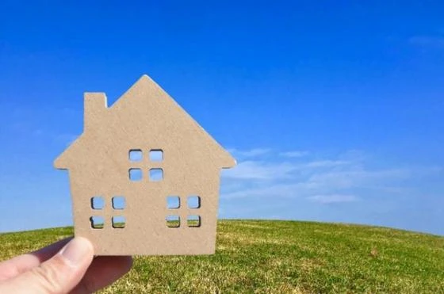
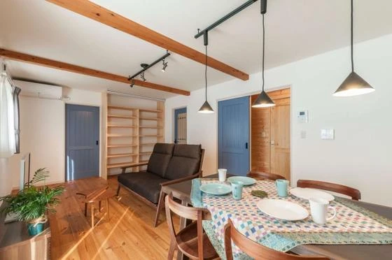

日当たりの良し悪し
こんにちは。富山で自然素材にこだわるホンモノの家、フジ創アイノスです。 日当たりに難がありそうな土地に家を建てる場合、南に建つ家の日かげになる場所を避けて家を建てるのが一般的な考え方です。 しかし、そうすることによって、
続きを読む →FUJISOU AINOS JOURNAL
家づくりのこと、暮らしのこと。
日々の想いを、お伝えします。
新しい記事から 23・40ページ
こんにちは。富山で自然素材にこだわるホンモノの家、フジ創アイノスです。 日当たりに難がありそうな土地に家を建てる場合、南に建つ家の日かげになる場所を避けて家を建てるのが一般的な考え方です。 しかし、そうすることによって、
続きを読む →こんにちは。富山で自然素材にこだわるホンモノの家、フジ創アイノスです。 今日の高岡市の湿度は90％でした。 梅雨の高い湿度は健康を害することがありますので、注意が必要です。 高湿度の環境はカビが発生しやすくなり、アレルギ
続きを読む →
こんにちは。富山で自然素材にこだわるホンモノの家、フジ創アイノスです。 まず平屋は高いという認識ですが、これに対する解決策は、自分にとって不要だと思うところや無駄だと思うところを削ることによって余分なコストをカットするこ
続きを読む →こんにちは。富山で自然素材にこだわるホンモノの家、フジ創アイノスです。 『平屋』がその敷地におさまり、かつ暮らしの快適性に支障をきたさないのであれば、平屋を基本に家づくりを考えるのが良いでしょう。 今回は平屋について、良
続きを読む →
こんにちは。富山で自然素材にこだわるホンモノの家、フジ創アイノスです。 ✔︎間取りを自分だけで決めない 家の外観を美しくするために一番大切なことは、間取りを自分で勝手に決めないことです。 例えば、家を建てる土地が北向きの
続きを読む →こんにちは。富山で自然素材にこだわるホンモノの家、フジ創アイノスです。 白い家の外観は美しく、憧れを抱く方も多いと思いますが、それと同時に汚れやすく、かつ汚れも目立ちやすいというネガティブな要素も、頭に浮かんでしまうので
続きを読む →
こんにちは。富山で自然素材にこだわるホンモノの家、フジ創アイノスです。 家づくりは、一生で最大の買い物なのに、わからないことや不安だらけですよね。 「まずは何からはじめたら良い？」 「どのくらいの価格で家を建てられるの？
続きを読む →こんにちは。富山で自然素材にこだわるホンモノの家、フジ創アイノスです。 ✔︎光を拡散するための工夫 窓づくりを工夫した次には、入ってきた光を家全体に拡散させていくことが必要です。 そのために欠かせない1つ目の要素が、 『
続きを読む →こんにちは。富山で自然素材にこだわるホンモノの家、フジ創アイノスです。 室内を光に満ちた明るい空間にするためには、窓から光を安定的に採り込むことと、その光を家全体にまんべんなく届けるための工夫が必要です。 そのためには、
続きを読む →こんにちは。富山で自然素材にこだわるホンモノの家、フジ創アイノスです。 ✔︎片付きやすいかどうかも間取り次第 掃除や片付けなどの負担を減らすことも、快適な住まいにするためには大切な要素ですが、これを考えるにあたって最もや
続きを読む →こんにちは。富山で自然素材にこだわるホンモノの家、フジ創アイノスです。 自宅でストレスなく快適に過ごしていただくためには、家事にかかる負担が少ないことも、大切な条件の1つではないでしょうか。 というのも、共働きが当たり前
続きを読む →
こんにちは。富山で自然素材にこだわるホンモノの家、フジ創アイノスです。 ✔︎難しい、明るさとプライバシーの共存 南向きの土地は、一見光に満ちた明るくて開放的な家が出来上がると思ってしまいますが、現実は、案外そうでもありま
続きを読む →こんにちは。富山で自然素材にこだわるホンモノの家、フジ創アイノスです。 "快適な家にしたい"という願いは、家づくりをする全ての方がお持ちだと思います。 その"快適なお家"とは具体的には、 "光と開放感が感じられること"
続きを読む →こんにちは。富山で自然素材にこだわるホンモノの家、フジ創アイノスです。 今日は世界禁煙デー。WHOが世界人類の健康のために制定しました。 みなさん健康に気を付けましょう！ 人が一日で最も多く体に取り込むものは、空気です。
続きを読む →こんにちは。富山で自然素材にこだわるホンモノの家、フジ創アイノスです。 窓が少なくなると、室内側にも大きなメリットが生まれます。 というのも、窓が少なくなれば、必然的に壁の面積が増え、壁の面積が増えれば、収納の棚をよりた
続きを読む →こんにちは。富山で自然素材にこだわるホンモノの家、フジ創アイノスです。 家を建てる誰もが、明るくて開放的なお家にしたいと思い、そうなるように充分な窓を設置します。 しかし、明るさや開放感は、必ずしも窓の大きさや数には比例
続きを読む →こんにちは。富山で自然素材にこだわるホンモノの家、フジ創アイノスです。 今夜の満月は、今年一番地球に接近するスーパームーンです。 スーパームーンの皆既月食が日本で見られるのは1997年9月以来、約24年ぶりだそうです。
続きを読む →こんにちは。富山で自然素材にこだわるホンモノの家、フジ創アイノスです。 ✔︎住んで半年もしたら生活感満載のお家になってしまう このような土地に建てる家に限らず、2階建て住宅の大半は、子ども部屋が2階につくられていますが、
続きを読む →こんにちは。富山で自然素材にこだわるホンモノの家、フジ創アイノスです。 例えば、下記のように南に家が建っている土地に家を建てるとしたら、一般的には日陰部分を避け、日なた部分に家を建てるように計画を立てます。 その結果、2
続きを読む →
こんにちは。富山で自然素材にこだわるホンモノの家、フジ創アイノスです。 ✔︎住む地域とコストと住みやすさと 家づくりでは、住む地域も大切だし、予算も大切です。 また、住みやすさも大切なので、このバランスが取れた家づくりを
続きを読む →こんにちは。富山で自然素材にこだわるホンモノの家、フジ創アイノスです。 家づくりを始めて、SNSや住宅雑誌を見たり、モデルハウスや見学会に足を運び、たくさんの家に触れていると、実現したい様々な要望がどんどん積み重なってい
続きを読む →
こんにちは。富山で自然素材にこだわるホンモノの家、フジ創アイノスです。 当社の家づくりは、お客様のご希望に合わせた３つのスタイルを提案しています。 アイノスのおうち 自然素材のナチュラルな家。 無垢材、しっくい壁、和紙畳
続きを読む →こんにちは。富山で自然素材にこだわるホンモノの家、フジ創アイノスです。 日中も場所に応じて光の採り方に工夫が必要 光に対する配慮は、夜だけじゃなく、日中においてもすべきことです。 例えば、寝室は「寝るだけの部屋」であるた
続きを読む →こんにちは。富山で自然素材にこだわるホンモノの家、フジ創アイノスです。 以前の家づくりは、部屋ごとに天井の真ん中にシーリングライトと呼ばれる大きな照明器具を付けるのが主流でした。 この器具の良いところは、寝る時に常夜灯（
続きを読む →